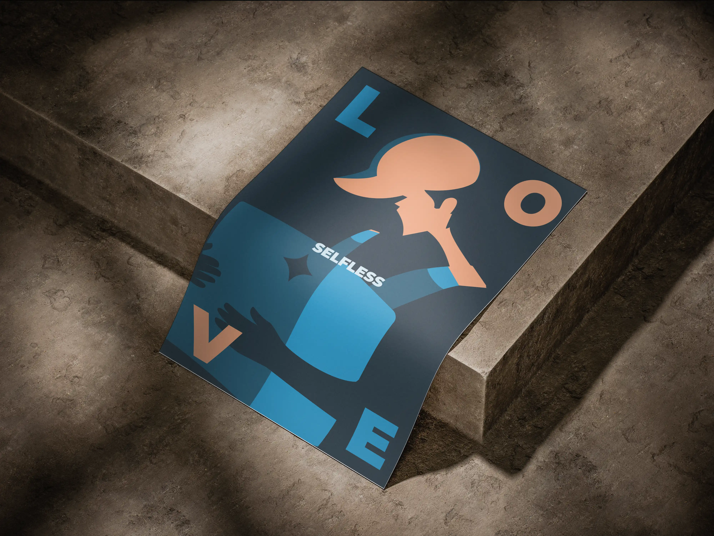
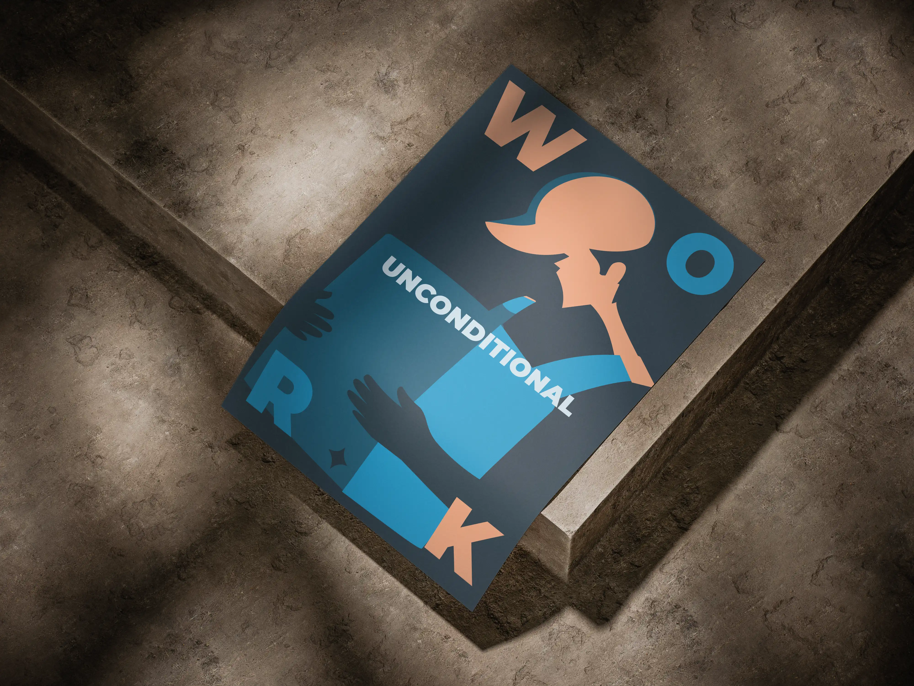
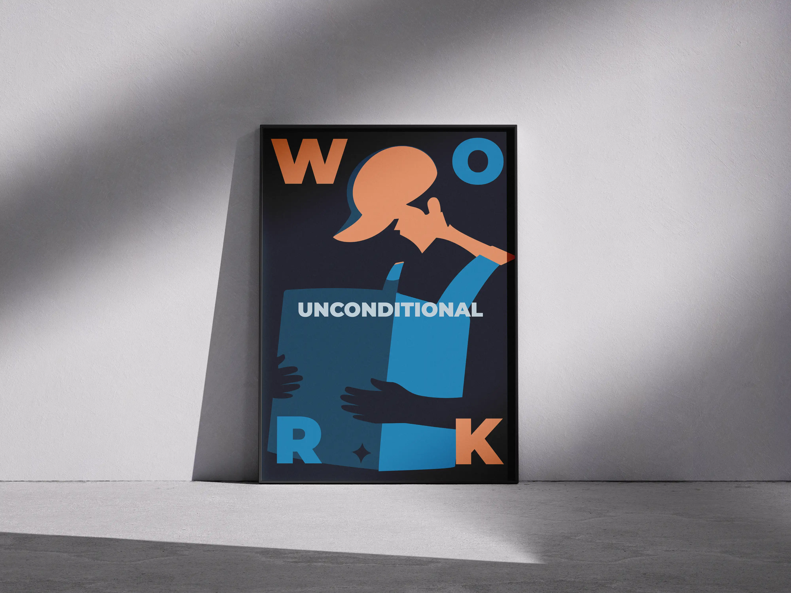
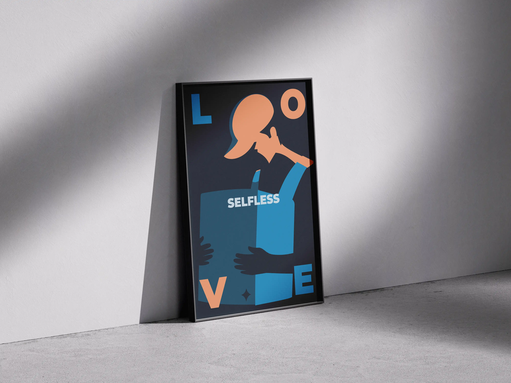
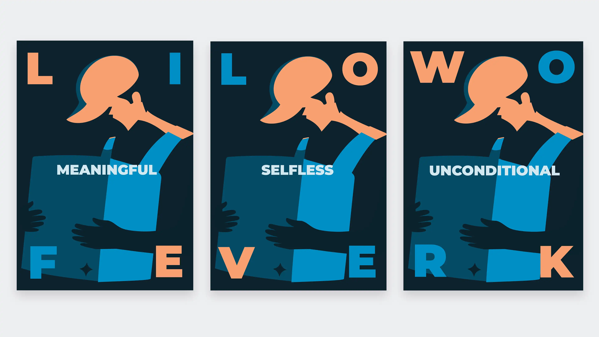

The poster focuses on the contradictions of employment in the age of high-tech, neoliberal capitalism—a system in which what was once stable employment has been reduced to the ruthless, unregulated exploitation of precarious labor.
In the so-called gig economy, global tech corporations have stripped away the benefits of full employment and are now targeting the complete life energy and cognitive attention of the exploited. The once-optimistic outlook of technological solutionism has devolved into a clockwork exploitation machine, where myopic individualism is weaponized to silence any doubts about the system's inherent unfairness.
This poster illustrates how this system has become even more sinister. By playing on the theme of parental love, this series of posters show how capital penetrates and extracts the last remaining aspects of human essence, placing them at the service of profit and greed.
The artwork depicts a fictional job advertisement in which parental love is redirected away from its natural beneficiaries—children—and extracted as profit-making labor and corporate loyalty. What was once considered beyond the grip of capital has now become its prime target. Unsurprisingly, as a result, birth rates are plummeting globally because people can no longer afford to procreate.
Today's tech oligarchs have colonized our energy, time, and attention in a brutal game of capitalist survival.



